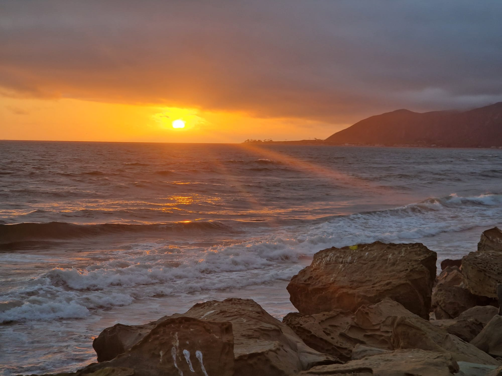
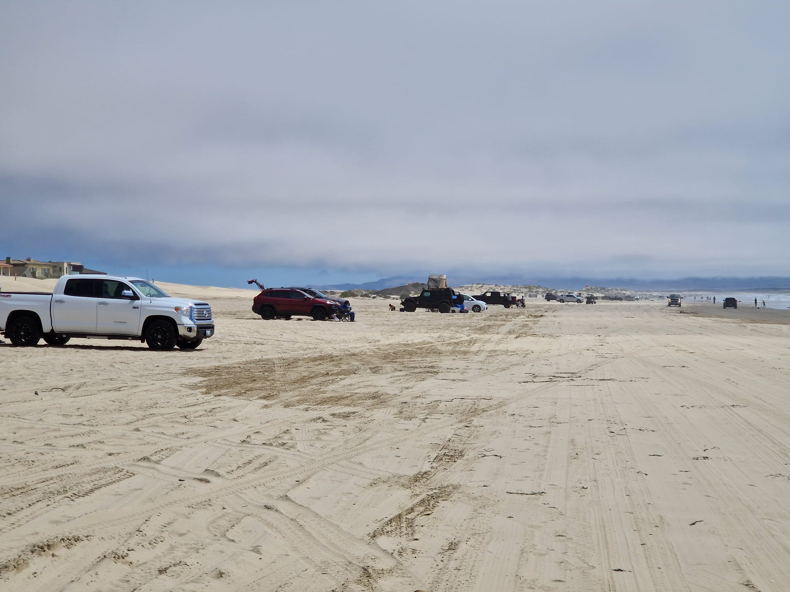
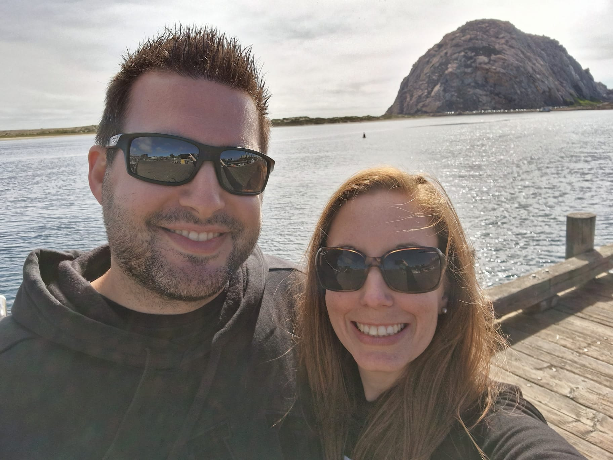
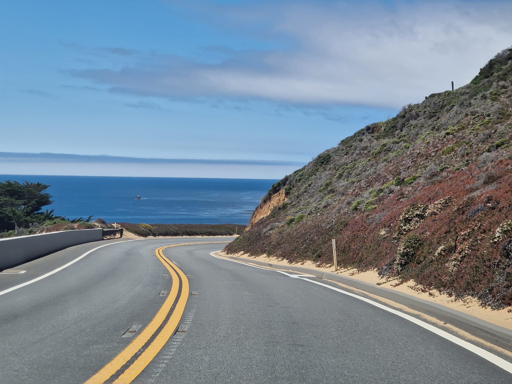
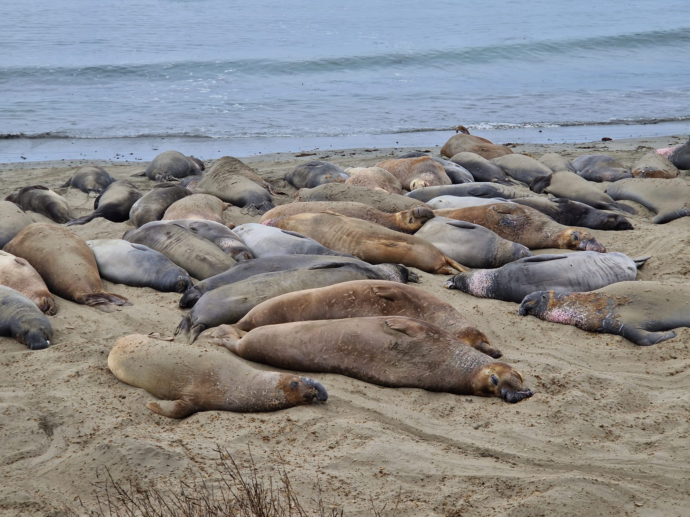
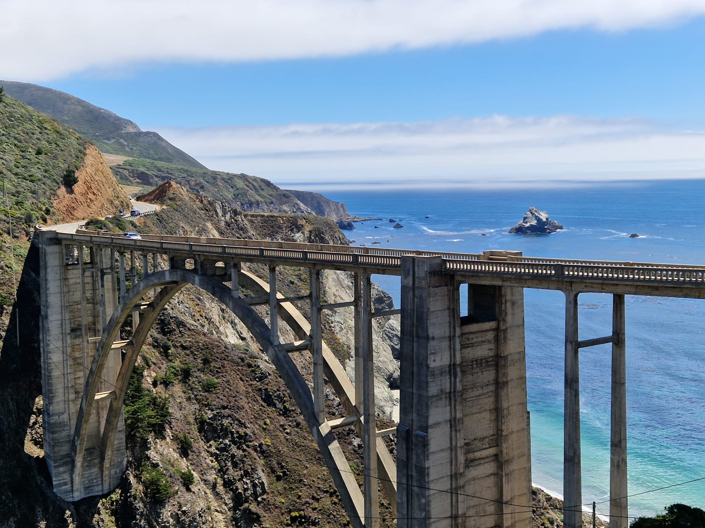
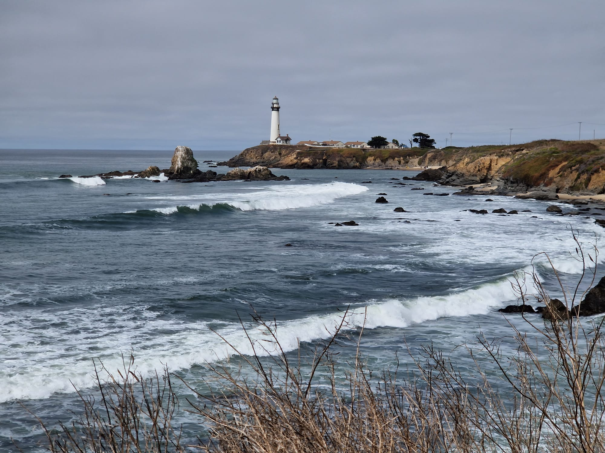

Highway One, der Küste entlang
Unsere Reise führte uns nun in Richtung Norden. Gemäss Google Maps hätten wir eigentlich nach ca 3.5 Stunden an unserem nächsten Ziel sein sollen, daher nahmen wir es eher gemütlich und legten nochmals einen kurzen Shopping-Stopp beim Carlsbad Outlet ein. Als wir danach wieder weiterfuhren merkten wir sehr schnell, dass die Fahrt nach Santa Barbara um einiges mehr Zeit in Anspruch nehmen wird, als gedacht, denn das Verkehrsaufkommen in der Gegend von Los Angeles war enorm. Trotzdem machten wir noch einen kleinen Abstecher nach Venice Beach. Ehrlich gesagt nicht, um Venice Beach zu besichtigen, sondern um auch noch den dritten Gastbruder, Kai, (damals 9 Jahre alt) von Mimi zu besuchen. Dieser arbeitet zur Zeit in einer Bar in Venice. Obwohl uns dies nochmals Zeit gekostet hat, war es einfach super toll auch Kai nach solch langer Zeit wieder zu sehen. Danach setzten wir unsere Fahrt in Richtung Santa Barbara fort. Um nicht noch mehr Zeit zu verlieren, beschlossen wir ohne einen weiteren Halt bis zum Hotel zu fahren. Obwohl Mimi bereits wieder hungrig wurde (wir erinnern uns erneut an die Snickers-Werbung🙈) fuhren wir mit der Vorfreude auf ein leckeres Abendessen im Restaurant neben unserem Hotel weiter. Als wir dann um ca. 20 Uhr im Hotel ankamen, kam die Enttäuschung: das Restaurant war nur von 17 Uhr bis 19.30 Uhr offen! Was?! Ein Restaurant, das um 19.30 Uhr schliesst? Echt jetzt? Leider ja! Da das Hotel ganz alleine an der Pazifikküste im "Nirgendwo" stand, hatten wir auch keine anderen Restaurants oder Einkaufsmöglichkeiten zur Verfügung. Zudem ist es in den USA, zu mindest in Kalifornien, normal, dass Restaurants um 21 Uhr schliessen. Toll, somit blieb uns nur noch die Wahl zwischen einer Banane oder dem McDonalds im nächsten Dorf. Die bereits schon seit Beginn unserer Reise sehr strapazierte Verdauung wird uns die Entscheidung für den McDonalds bestimmt danken. 😬🙈 Dafür wurden wir mit einem schönen Sonnenuntergang belohnt.  Am nächsten Morgen beschlossen wir sehr früh loszufahren, damit uns nicht nochmals ein Abendessen entgeht. Zuerst fuhren wir in die Stadt Santa Barbara hinein und verweilten dort für ein paar Stunden, bevor wir danach weiterfuhren Richtung Morro Bay. Unterwegs fuhren wir an grossen Sanddünen vorbei und entschieden, bei der nächsten Gelegenheit nochmals einen kleinen Halt am Strand zu machen. Wir staunten dann nicht schlecht, als wir an einem Drive-In Strand landeten! Die Amis haben auch wirklich für alles eine Drive-In Variante, sogar für den Strand🙈  Danch ging es nun ohne Halt nach Morro Bay. Dort angekommen waren wir zuerst ziemlich schockiert vom Erscheinungsbild unserer Unterkunft, doch nachdem wir unser Zimmer betraten, waren wir positiv überrascht. Neuer Parkettboden, neue Einrichtung...eine richtig schöne Unterkunft, wenn nicht sogar die bisher schönste! Danach gingen wir zu Fuss in Richtung Hafen von Morro Bay, um dort in einem der vielen Restaurants unser Abendessen zu geniessen. Und dieses Mal konnte man wirklich von geniessen sprechen, denn es war wirklich sehr lecker und endlich wieder einmal kein Fastfood, sondern viel Gemüse. Dazu gönnten wir uns ein feines Gläschen Wein.😉  Der Nächste Tag ging auf der bekannten Route One weiter und nun kam auch endlich der wirklich schöne und interessante Teil dieser Strecke. Die Szene gleichte einem Hollywood Film. An diesem Tag nahmen wir es sehr gemütlich und hielten wenn immer möglich an, um ein paar Fotos zu knipsen und die Landschaft zu geniessen.  Unterwegs kamen wir an einem Strand vorbei, an welchem sich See-Elefanten (elephant-seals) sonnten. Nachdem wir nun schon normale Robben und Seelöwen gesehen hatten, waren diese See-Elefanten sogleich noch ein Stück grösser und imposanter. Ebenfalls konnten wir weit draussen im Meer Wale sehen, jedoch waren diese leider viel zu weit entfernt, um ein Foto davon zu knipsen. Trotzdem war es ein tolles Erlebnis, diese einmal in freier Wildbah sehen zu können.  Gegen den Schluss der Fahrt fuhren wir durch Big Sur und beinahe zum Schluss dann auch noch über die bekannte Bixby Bridge, welche auch das Titelbild unseres Reiseblogs ziert.  Nachdem wir auch hier mehr als genügend Fotos geknipst hatten, fuhren wir schlussendlich nach Pacific Grove bei Monterey, wo unsere nächste Unterkunft auf uns wartete. Der nächste Tag war nun auch bereits der Letzte unseres Roadtrips. An diesem Tag fuhren wir nochmals auf der Route One bis nach San Francisco. Unterwegs kamen wir noch an einem sehr alten Leuchtturm vorbei, bei welchem wir nochmals kurz einen Stopp einlegten.  Danach fuhren wir weiter in die grosse Stadt hinein. Dazu dann aber mehr in unserem nächsten Blogeintrag 😉